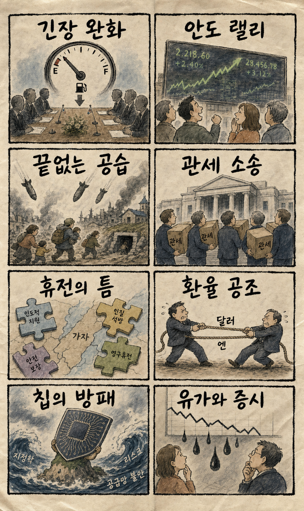
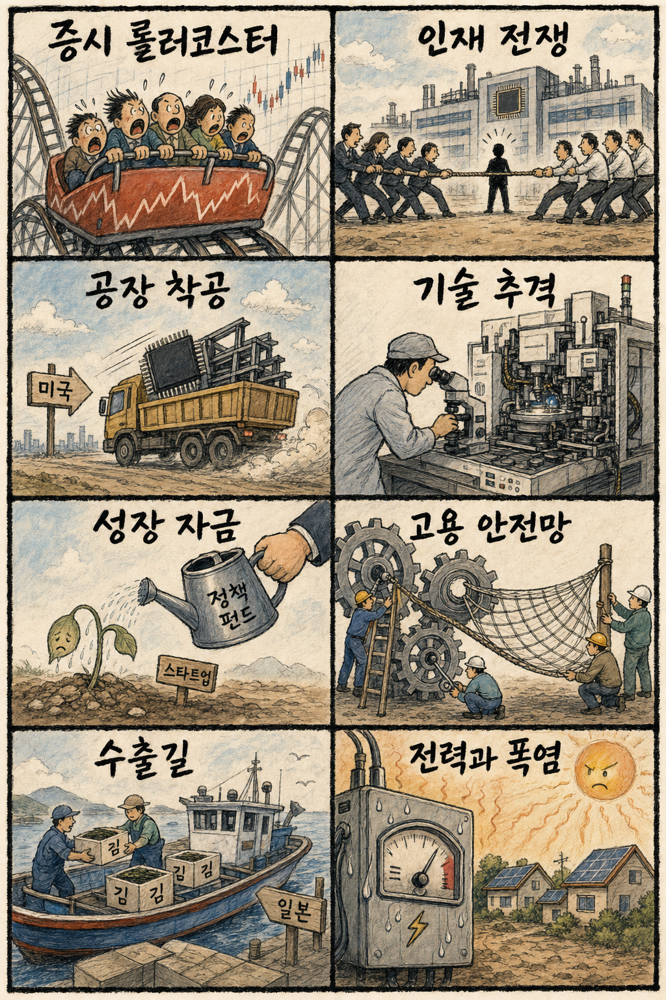

01
메타 +6.02% — AI 대형주 위험선호 확대
내용요약 메타는 590.24달러로 마감하며 AI 대형주 랠리에서 가장 강한 상승률을 기록했습니다.
예상여파 국내 AI 소프트웨어와 데이터센터 공급망 심리에 우호적이지만 단기 급등 추격은 경계해야 합니다.
MORNING_BRIEFING_20260804
작성 시각: 2026-08-04 06:39 KST · 직전 미국 정규장과 2026-08-04 KST 당일 공개 기사 기준
직전 미국 정규장인 8월 3일에는 다우 +1.32%, S&P 500 +1.48%, 나스닥 +2.13%로 동반 상승했습니다. 중동 긴장 완화 기대와 유가·국채금리 하락이 위험선호를 되살렸고 AI 대형주가 랠리를 이끌었습니다. 한국 증시에는 기술주 심리 회복이 호재지만, 전일 KOSPI -5.12%·KOSDAQ +2.44%의 극단적 차별화 뒤라 시초가 갭보다 외국인 수급의 지속성을 먼저 확인해야 합니다.
| 지수 | 종가 | 등락률 | 한국 증시 영향 |
|---|---|---|---|
| 다우존스 | 53,178.41 | +1.32% | 유가 하락과 경기민감주 위험선호에 우호적 |
| S&P 500 | 7,600.50 | +1.48% | 대형주 전반의 밸류에이션 부담 완화 |
| 나스닥 종합 | 25,913.90 | +2.13% | 국내 반도체·AI 인프라 심리에 직접 호재 |
나스닥이 2.13% 오르며 AI 대형주가 반등했습니다.
중동 긴장 완화 기대가 주식과 채권을 함께 밀었습니다.
전일 KOSPI -5.12%, KOSDAQ +2.44%로 방향이 갈렸습니다.
변동성과 검증 표본 부족으로 공식 추천은 없습니다.
8월 3일 보고서는 전 거래일 비정상 급등과 검증 문턱 미충족으로 공식 추천을 내지 않았습니다. 따라서 8월 3일 실제 시가를 사후 진입 기준으로 계산할 종목이 없으며 게시 당시 판단을 바꾸지 않습니다.
| 지수 | 종가 | 등락률 | 해석 |
|---|---|---|---|
| 다우존스 | 53,178.41 | +1.32% | 유가 하락과 경기민감주 회복 |
| S&P 500 | 7,600.50 | +1.48% | 대형주 전반 위험선호 확대 |
| 나스닥 종합 | 25,913.90 | +2.13% | AI·반도체가 상승 주도 |
| KOSPI | 6,257.45 | -5.12% | 전일 급등 뒤 대형 반도체 중심 되돌림 |
| KOSDAQ | 737.35 | +2.44% | 중소형 성장주 상대 강세 |
AI 소프트웨어, 클라우드, 반도체 장비, 바이오, 중소형 성장주, 유가 하락 수혜 운송
전일 급락한 대형 반도체의 변동성 구간, 정유, 과열 테마주, 관세 민감 소비재
내용요약 메타는 590.24달러로 마감하며 AI 대형주 랠리에서 가장 강한 상승률을 기록했습니다.
예상여파 국내 AI 소프트웨어와 데이터센터 공급망 심리에 우호적이지만 단기 급등 추격은 경계해야 합니다.
내용요약 마이크로소프트는 487.65달러로 올라 금리 하락과 AI 투자 회수 기대의 수혜를 받았습니다.
예상여파 국내 서버·전력·냉각 관련주에 긍정적 연결고리가 되지만 실제 수주와 실적 확인이 필요합니다.
내용요약 알파벳은 373.51달러로 상승하며 광고·클라우드와 AI 성장 기대를 반영했습니다.
예상여파 생성형 AI 경쟁이 재평가되면 국내 인터넷·클라우드주의 투자심리도 개선될 수 있습니다.
내용요약 아마존은 284.02달러로 상승해 클라우드와 AI 인프라 성장 기대가 이어졌습니다.
예상여파 AWS 설비투자 확대 기대는 반도체·데이터센터 전력 수요에 우호적입니다.
내용요약 애플은 303.42달러로 하락해 대형 기술주 전반의 강세와 달리 상대적으로 부진했습니다.
예상여파 국내 스마트폰 부품주는 지수 효과보다 고객사 출하와 제품주기 변수를 별도로 봐야 합니다.
미국 3대 지수 급등과 AI 대형주 반등은 국내 성장주에 우호적입니다. 다만 전일 KOSPI는 5.12% 하락한 반면 KOSDAQ은 2.44% 상승했고, 삼성전자 -8.76%·SK하이닉스 -8.79%로 대형 반도체 변동성이 컸습니다. 오늘은 반도체의 기술적 반등 가능성과 추가 매물 위험이 공존하므로 원·달러 환율, 외국인 현·선물 동반 수급, 첫 30분 저점 유지 여부를 확인해야 합니다.
오늘은 추천 없음 — 현금 관망
전일까지의 외국인·기관 수급과 컨센서스 변화, 30건 이상 유사 조건 확률 보정, 예상 손익비 1.5 이상을 동시에 검증한 후보가 없습니다. 전일 대형 반도체 급락 직후의 높은 변동성도 과열·하방위험 문턱에 걸립니다. 임의의 점수와 확률은 제시하지 않습니다.
관심 연결종목 삼성전자·SK하이닉스(AI 반도체), 두산에너빌리티(전력), 바이오 대형주는 관찰 대상일 뿐 매수 추천이 아닙니다. 장전 예상 급등과 시초가 갭 발생 시 추격매수 금지입니다.
KOSPI 급락 뒤 매도 진정 여부를 봅니다.
삼성전자·SK하이닉스의 저점 유지와 거래대금을 확인합니다.
미·일 환율 공조와 원화 변동의 국내 수급 영향을 점검합니다.
AI·산업 전환, 에너지, 고용정책의 구체안을 확인합니다.
핵심 요약: AI 경쟁은 GPU 확보에서 전력·데이터·운영을 묶은 AI 팩토리로 확장되고 있습니다. 메모리 공급 제약과 중국 장비 국산화, 자율형 보안과 피지컬 AI가 반도체·보안·로봇 산업의 다음 투자 축을 만들고 있습니다.
내용요약 AI 경쟁의 중심이 GPU 물량 확보에서 대규모 컴퓨팅·전력·데이터를 함께 운영하는 AI 팩토리 구축으로 옮겨가고 있다는 보도입니다.
예상여파 하이퍼스케일러의 설비투자가 반도체뿐 아니라 서버·냉각·전력망 수요를 함께 끌어올릴 수 있습니다.
내용요약 AI 기반 모의해킹 기업 호라이즌3가 2억5천만달러를 유치하고 기업가치 20억달러를 인정받았다는 보도입니다.
예상여파 자율형 보안 도구의 상용화가 빨라지며 기업 보안예산이 탐지 중심에서 지속 검증 중심으로 이동할 수 있습니다.
내용요약 중국의 심자외선 노광장비 국산화 수준과 반도체 공급망에 미칠 영향을 점검한 팩트체크 보도입니다.
예상여파 장비 자립이 진전되면 성숙 공정 경쟁은 더 거세질 수 있으나 첨단 공정의 수율과 생태계 격차가 핵심 변수가 됩니다.
내용요약 설비투자를 늘려도 실제 생산까지 3~5년이 걸려 메모리 공급 제약이 장기화할 수 있다는 업계 전망을 다룬 보도입니다.
예상여파 HBM과 고용량 메모리 수요가 이어질 경우 가격·가동률에는 우호적이지만 대규모 증설의 시차와 경기 변동을 함께 봐야 합니다.
내용요약 현장 노동자의 시범 동작을 학습해 작업을 수행하는 피지컬 AI 로봇이 공개됐다는 보도입니다.
예상여파 숙련 인력 부족이 큰 제조·물류 현장에서 로봇 학습 비용을 낮추고 도입 속도를 높일 가능성이 있습니다.
핵심 요약: 중동 긴장 완화 기대가 유가를 낮추고 글로벌 증시를 밀어 올렸지만, 우크라이나 공습과 가자 휴전 갈등은 여전히 진행형입니다. 미국의 관세 소송과 미·일 환율 공조는 정책 불확실성이 무역과 통화시장으로 번지는 흐름을 보여줍니다.
내용요약 러시아가 우크라이나 마을을 향해 장시간 활공폭탄 공격을 이어갔고 민간인 표적 논란이 제기됐다는 보도입니다.
예상여파 전쟁 장기화와 민간 피해 확대는 유럽 안보비용과 곡물·물류 위험 프리미엄을 계속 높일 수 있습니다.
내용요약 미국 25개 주가 연방정부의 새 관세 조치가 기존 판결을 우회한다며 소송을 제기했다는 보도입니다.
예상여파 관세정책의 법적 불확실성이 커지면 수입업체의 가격 책정과 글로벌 기업의 공급망 투자 결정이 늦어질 수 있습니다.
내용요약 중동 긴장 완화 기대 속 유럽 증시가 상승하고 독일 증시가 사상 최고치를 경신했다는 보도입니다.
예상여파 에너지 가격 부담 완화가 제조업과 소비심리를 돕지만 실제 외교 합의의 지속성이 상승세를 좌우합니다.
내용요약 이스라엘이 가자지구 주둔지 유지 방침을 밝힌 가운데 팔레스타인 측은 휴전 이행 방해라고 비판했다는 보도입니다.
예상여파 휴전 협상이 지연되면 중동의 지정학 위험과 인도주의 부담이 다시 커질 수 있습니다.
내용요약 미국과 일본의 환율 공조가 양국의 이해관계에 맞춰 형성됐다는 분석 보도입니다.
예상여파 달러·엔 변동은 아시아 통화와 수출 경쟁력, 외국인 자금 흐름에 연쇄 영향을 줄 수 있습니다.

핵심 요약: 미국 AI주 랠리와 국내 대형 반도체 급락이 엇갈리는 가운데, 인디애나 공장 착공과 바이오 정책펀드는 중장기 산업투자를 지지합니다. 고용 안전망과 식품 수출 다변화는 산업 전환의 비용과 지역 성장의 해법을 함께 보여줍니다.
내용요약 미국 증시 급등에도 원화와 전일 국내 증시 급변동을 함께 고려하면 한국장은 혼조 출발할 수 있다는 장전 전망입니다.
예상여파 나스닥 강세는 성장주에 우호적이지만 코스피 급락 직후라 환율·외국인 수급과 시초가 갭 관리가 중요합니다.
내용요약 SK하이닉스가 이달 말 미국 인디애나 공장 착공식을 열고 현지 채용도 시작한다는 보도입니다.
예상여파 첨단 패키징 현지화가 AI 공급망 대응력을 높일 수 있으나 투자비와 가동 일정은 중장기 실적 변수입니다.
내용요약 국민성장펀드와 1조원 규모 메가펀드 등을 통해 바이오기업의 자금 공백을 메우려는 정부 정책을 다룬 보도입니다.
예상여파 임상과 기술이전까지 긴 자금 회수 기간을 보완할 수 있지만 실제 집행과 후속 민간투자 연결이 관건입니다.
내용요약 산업 대전환 과정에서 재교육과 고용 안전망을 국가적 과제로 다룬 정책 보도입니다.
예상여파 AI·자동화 전환이 빨라질수록 직무 이동 지원과 숙련 재교육의 속도가 생산성과 사회적 비용을 가를 수 있습니다.
내용요약 농협이 원초김을 일본 외식업체에 처음 수출하며 새로운 판로를 열었다는 보도입니다.
예상여파 식품 수출 품목이 넓어지면 지역 생산자의 소득원 다변화에 도움이 되지만 품질 표준화와 환율 관리가 필요합니다.
